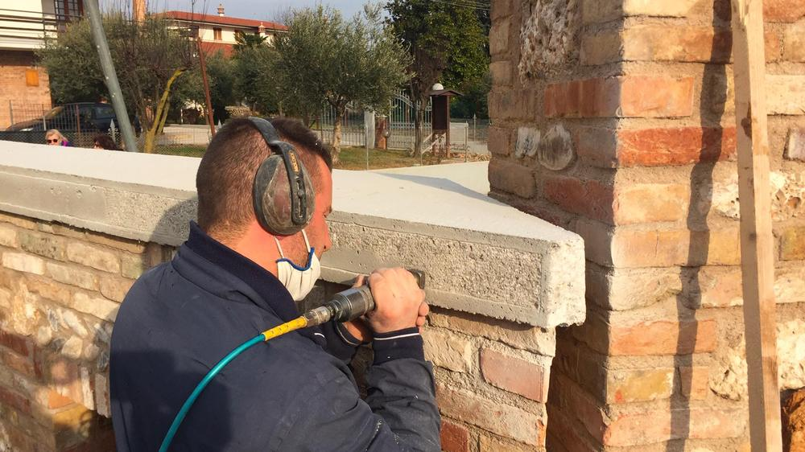
Pietra
Il vissuto di un edificio sta nelle sue strutture, e va rispettato. Puliamo, consolidiamo e proteggiamo le superfici in pietra, e le nuove le posiamo a mano.
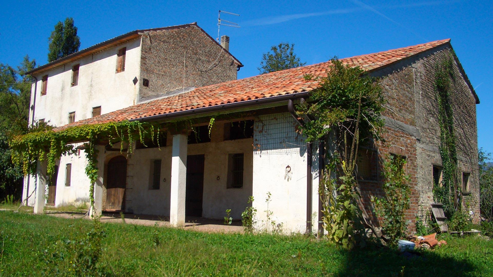
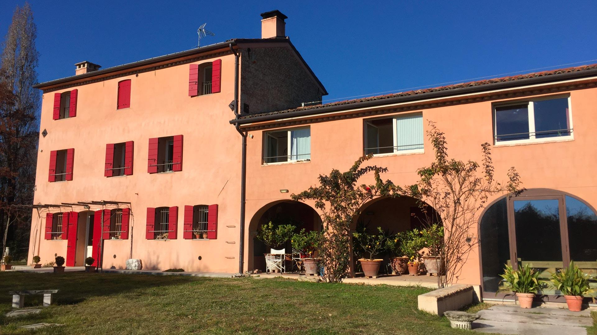
Restauro di rustici, palazzi e ville storiche e nuove costruzioni tra Treviso, Pordenone e Belluno. Dal 1995, da Conegliano.
Tredici cantieri dal nostro archivio, raccontati da chi li ha fatti. Trascina la maniglia sulla foto per vedere com'erano.
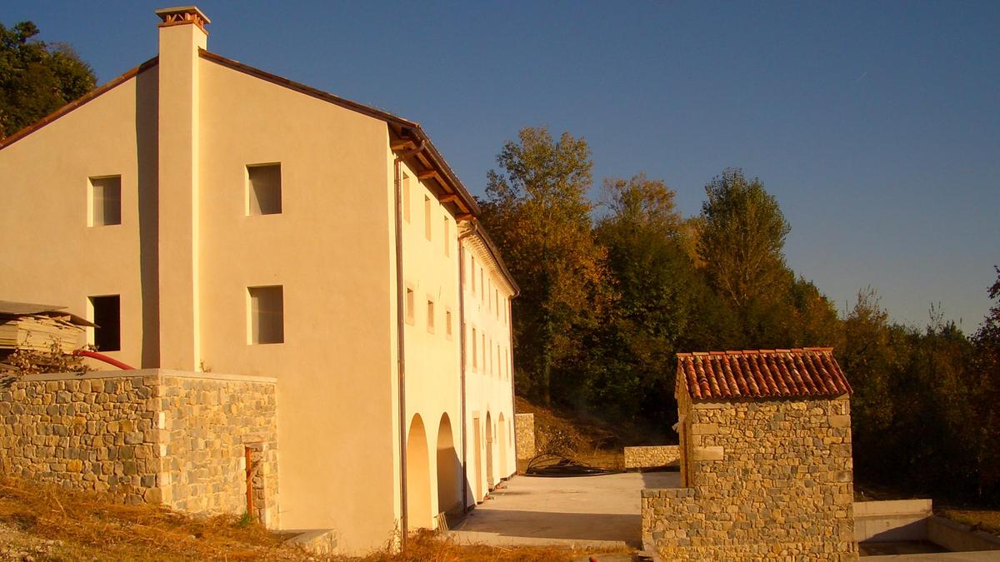
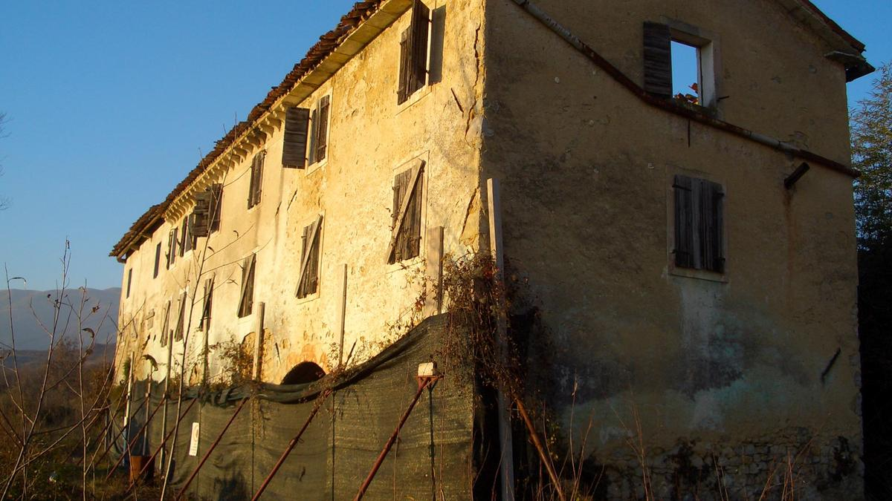
Restauro Colline sopra Vittorio Veneto
Era un rudere: muri in sassi pericolanti e una casa che si sbriciolava. Abbiamo legato i muri con tiranti in ferro, svuotato l'interno e rifatto le fondazioni su micropali, che reggono anche la nuova taverna davanti alla villa. Moderna dentro, con la pietra a vista fuori.
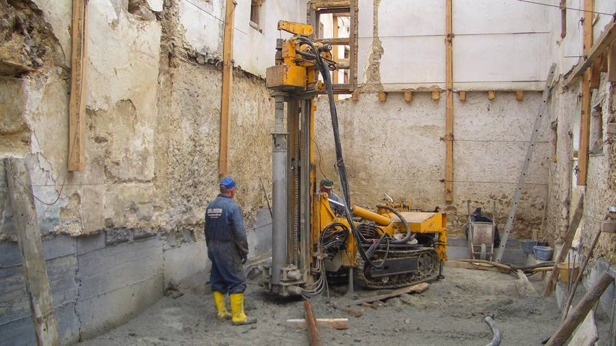
Hai un rustico, una casa o un palazzo da recuperare? Chiama per un sopralluogo
Ci siamo specializzati nei materiali della tradizione costruttiva: pietra, intonaco e legno. L'esperienza di cantiere ci dice quale metodo usare caso per caso; le mani delle nostre maestranze fanno il resto.
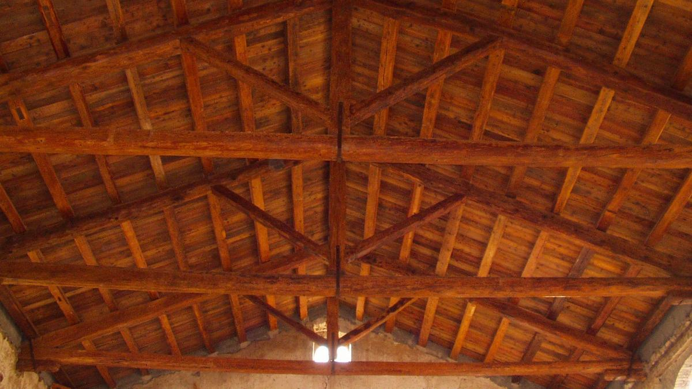

Il vissuto di un edificio sta nelle sue strutture, e va rispettato. Puliamo, consolidiamo e proteggiamo le superfici in pietra, e le nuove le posiamo a mano.
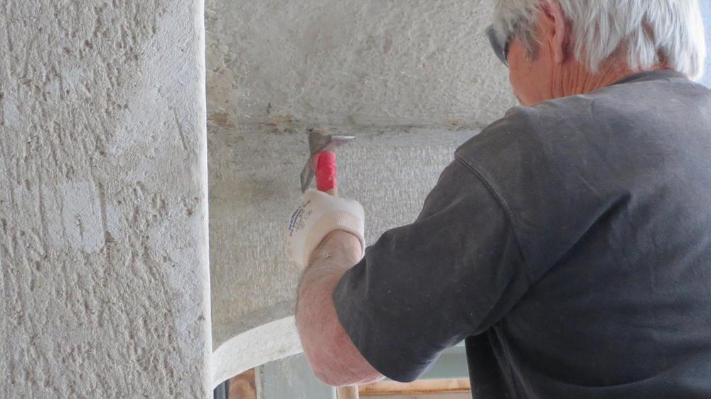
Li prepariamo come una volta, senza premiscelati: in base alle esigenze del cantiere o riproponendo la composizione di antiche ricette.
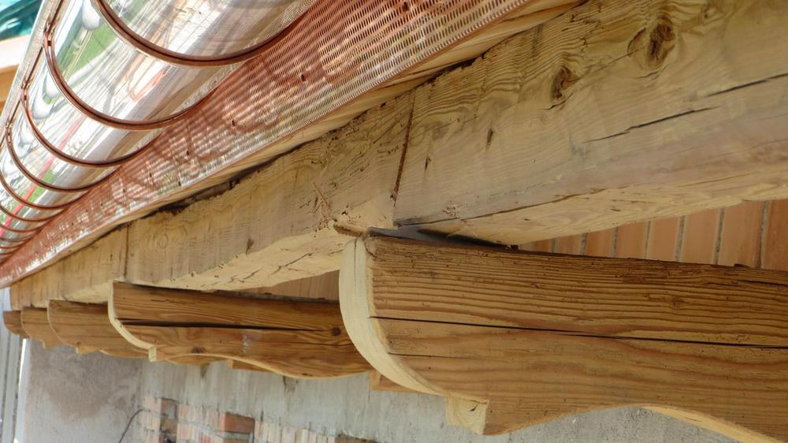
Recuperiamo e rifacciamo solai e coperture: consolidiamo travi e capriate e lavoriamo a mano il legname antico, fino alle venature e ai fori dei tarli.
Restauriamo l'antico e costruiamo il nuovo con la stessa attenzione: nella scelta dei materiali, nella messa in opera, nella finitura dei dettagli.
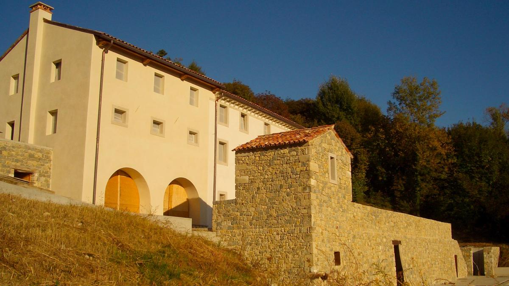
Rustici, case coloniche, palazzi del centro storico, ville liberty. Rinforziamo muri e fondazioni, recuperiamo travi e pietre, rifacciamo gli intonaci con le ricette di una volta.
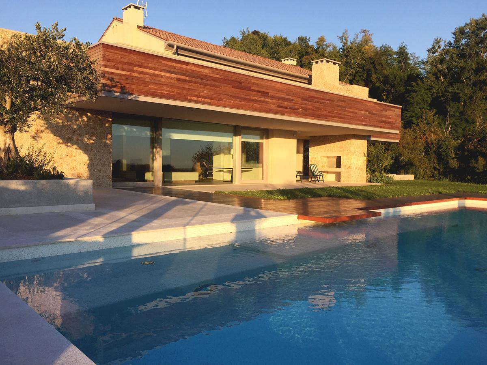
Ville e case residenziali, anche dove il terreno è difficile: micropali, terrazzamenti rinforzati, piscine a sfioro sulle colline patrimonio Unesco.
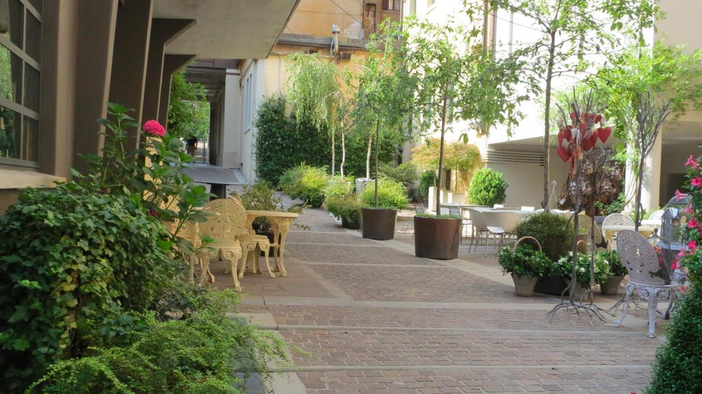
Negozi e spazi nel cuore dei centri storici, anche in corti strette dove il camion non entra e bisogna scavare sotto i fabbricati.
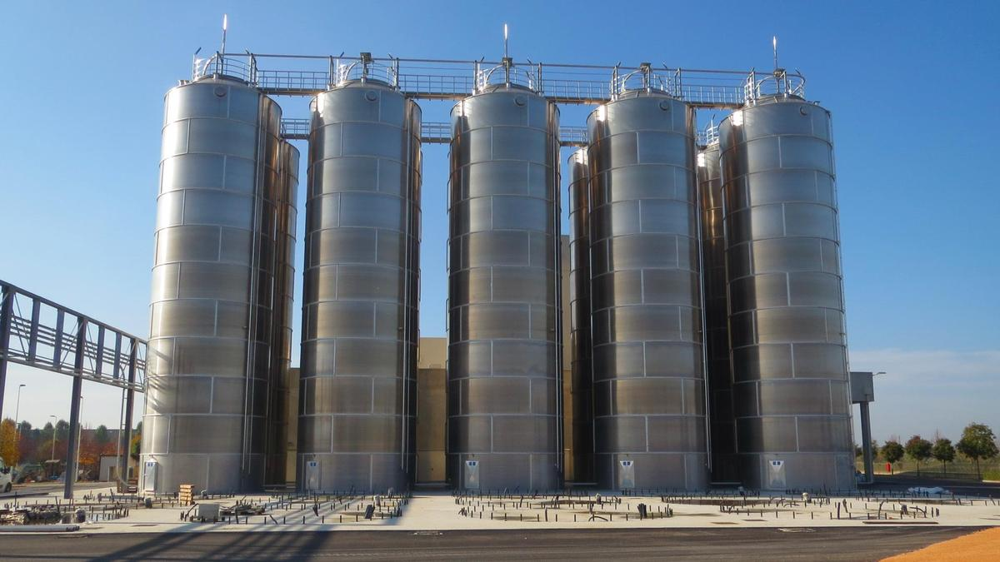
Capannoni e platee in calcestruzzo armato gettate senza interruzioni, anche 24 ore su 24, per reggere silos alti oltre 25 metri.
Un gruppo consolidato: tecnici di cantiere, maestranze esperte e pochi collaboratori scelti per le lavorazioni particolari. I clienti ci conoscono per l'accuratezza nelle opere e anche nei preventivi.
Artigiani di comprovata esperienza, che lavorano nelle migliori condizioni di sicurezza.
Cerchiamo di continuo le soluzioni costruttive e i materiali più adatti al singolo edificio.
Proponiamo soluzioni compatibili con le richieste del cliente e con il budget concordato.
Ottimizziamo i tempi e consegniamo il cantiere nei termini promessi.
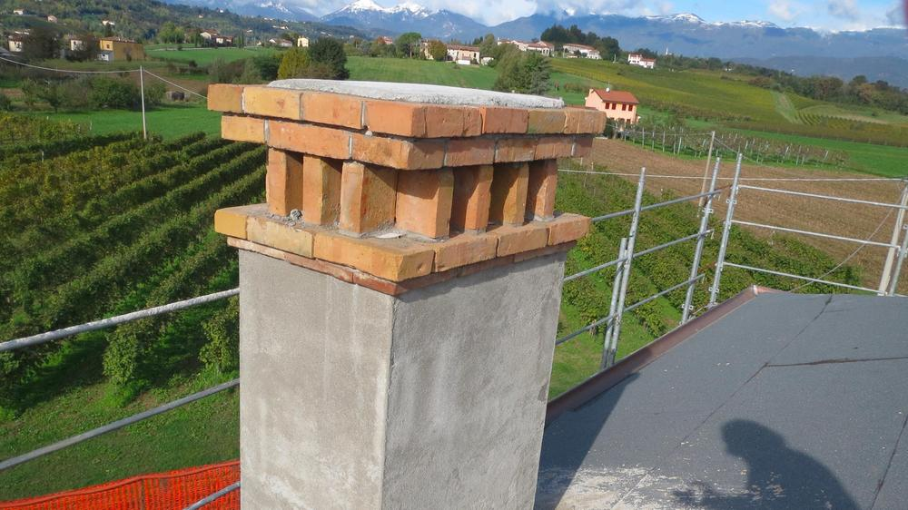
Per noi un edificio è sostenibile quando trova il suo equilibrio economico, ambientale e sociale, non solo quando consuma meno.
Spazio, luce, ordine. Sono cose di cui gli uomini hanno bisogno, come hanno bisogno di pane o di un posto per dormire.
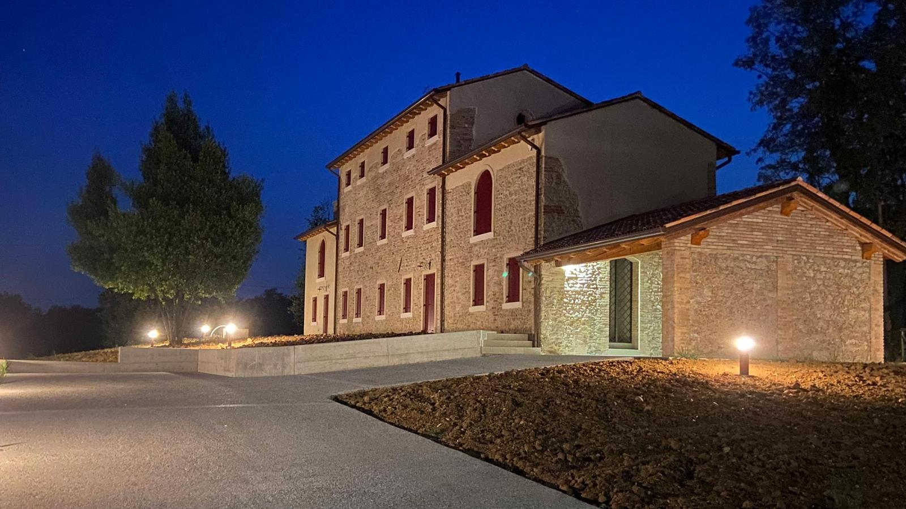
Raccontacela. Veniamo a vederla e ti diciamo con chiarezza cosa si può fare, in quanto tempo e a quale costo.
Orari ufficio: [DA CONFERMARE]